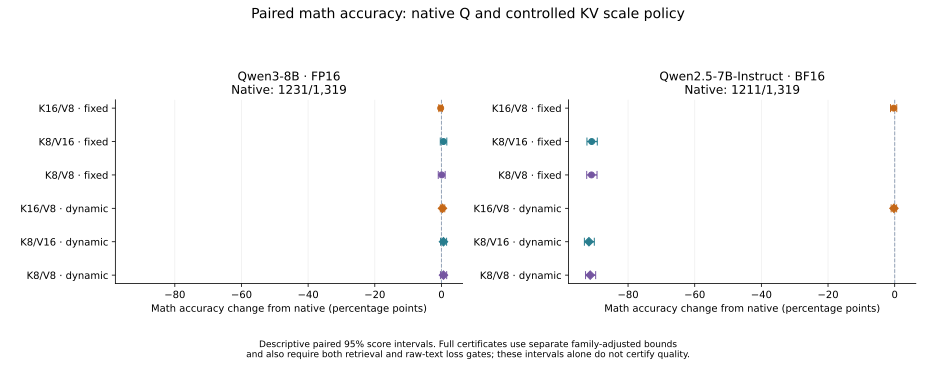
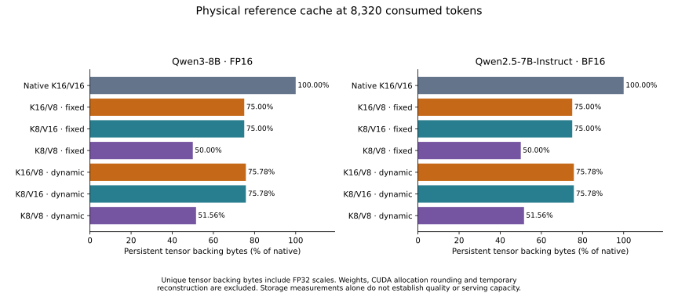

Asymmetric KV:
results and data
Keeping keys precise prevents a severe quality loss in the tested Qwen2.5 recipes. Qwen3 tolerates key quantization better, so symmetric FP8 remains a credible way to save more memory. Asymmetric KV has measured benefits in specific recipes; these results do not establish it as the best format across models.
The new comparison establishes quality and physical memory, not a new serving-speed winner. Both reference panels completed: Qwen3-8B and Qwen2.5-7B-Instruct, with seven cache/scaling configurations each. Only Qwen3 received the matched actual-worker comparison. The separately measured Qwen3 batch gains and HTTP tradeoffs retain their own scope.
Two checkpoints from one family in the matched experiment.
Each of the fourteen reference configurations ran all 1,319 GSM8K math questions, 128 prediction-loss cases and 400 retrieval cases. The four Qwen3 workers each ran the same panel sizes. Native, asymmetric, reverse-precision and symmetric caches were compared under fixed and dynamic scaling; native is shared between the two policies. Queries and model weights stay native within each panel. This is a detailed precision/scaling study, not broad cross-family validation or a new quantized-weight model study.
| Model / weights | Completed comparison | Remaining gap |
|---|---|---|
| Qwen3-8B · FP16 | Seven reference configurations; four actual workers with quality and physical-memory checks. | No new matched native/asymmetric/symmetric serving timing. |
| Qwen2.5-7B-Instruct · BF16 | Seven reference configurations with quality and physical-memory checks. | No corresponding optimized-worker or serving comparison. |
| Qwen3.8-27B / Gemma 4 26B-A4B · BF16 | Separate three-format references with dynamic scales. | No matched fixed-scale or reverse-precision panel; no optimized serving result. |
| Phi-4 / Ministral 3 8B · FP16 | Separate asymmetric worker transfers: Phi-4 qualifies; Ministral preservation is not established. | No matched three-format serving comparison. |
| Qwen3-8B · INT4 AWQ | Qualified asymmetric batch result; HTTP preservation not established. | No new native-query, matched-scaling symmetric worker comparison. |
The full matched study needs additional model families and actual serving measurements before it can support a general deployment recommendation. GPT-oss and DeepSeek are not part of these new panels. Results from different quantizers, query precisions or execution paths cannot fill a missing comparison automatically.
Reading the quality tables: “preservation” bounds previously correct answers that become wrong, with a limit of 2% of all questions. “Aggregate math” bounds the net accuracy change, allowing new correct answers to offset losses, with a margin of one percentage point. Both also require prediction-loss and retrieval limits. A certificate means the full set of statistical bounds passes. These are different objectives; neither is always stricter. “Not established” means insufficient evidence to clear the declared limits, unless measured degradation is stated separately.
Completed precision/scaling reference · October 22, 2026
Qwen2.5 needs precise keys in these recipes; Qwen3 does not show the same failure.
On Qwen2.5, native math accuracy is 1,211/1,319. Keeping keys at BF16 yields 1,207 or 1,208 correct answers; quantizing keys yields only 1–12, even when values stay at BF16. All four key-quantized recipes also score 0/200 at 8K retrieval, versus 200/200 for both asymmetric recipes. The measured advantage is large, but specific to these tested quantizers. K16/V8 itself still misses the full statistical qualification rule.
On Qwen3, all recipes stay near native math accuracy and pass retrieval and prediction-loss bounds. With dynamic scales, asymmetric and symmetric both qualify for aggregate accuracy; symmetric saves more cache memory. Asymmetric qualifies for the different answer-preservation objective. No broad direct math-accuracy advantage for asymmetry is established.
Each model ran native K/V plus six physical FP8 recipes with the same native queries and attention arithmetic. A means K16/V8, R K8/V16, and S K8/V8. F uses fixed layer/component scales; D uses separate scales per token and head. Qwen3 uses FP16 and Qwen2.5 uses BF16. This controlled reference temporarily reconstructs each layer's compressed operands; it does not measure fused serving speed.
| Model / recipe | Math correct | Losses / gains | Net change (pp) | Preservation | Aggregate math |
|---|---|---|---|---|---|
| Qwen3-8B FP16 · AF | 1228 / 1319 | 6 / 3 | -0.227 | Pass | Not established |
| Qwen3-8B FP16 · RF | 1239 / 1319 | 16 / 24 | +0.607 | Not established | Pass |
| Qwen3-8B FP16 · SF | 1232 / 1319 | 22 / 23 | +0.076 | Not established | Not established |
| Qwen3-8B FP16 · AD | 1235 / 1319 | 6 / 10 | +0.303 | Pass | Pass |
| Qwen3-8B FP16 · RD | 1239 / 1319 | 13 / 21 | +0.607 | Not established | Pass |
| Qwen3-8B FP16 · SD | 1239 / 1319 | 14 / 22 | +0.607 | Not established | Pass |
| Qwen2.5-7B-Instruct BF16 · AF | 1207 / 1319 | 20 / 16 | -0.303 | Not established | Not established |
| Qwen2.5-7B-Instruct BF16 · RF | 12 / 1319 | 1199 / 0 | -90.902 | Not established | Not established |
| Qwen2.5-7B-Instruct BF16 · SF | 11 / 1319 | 1200 / 0 | -90.978 | Not established | Not established |
| Qwen2.5-7B-Instruct BF16 · AD | 1208 / 1319 | 15 / 12 | -0.227 | Not established | Not established |
| Qwen2.5-7B-Instruct BF16 · RD | 1 / 1319 | 1210 / 0 | -91.736 | Not established | Not established |
| Qwen2.5-7B-Instruct BF16 · SD | 6 / 1319 | 1205 / 0 | -91.357 | Not established | Not established |
Qwen3: all arms retrieve 200/200 at each length and meet the relative prediction-loss bound. Dynamic K8/V8 passes aggregate math: its lower bound is −0.774 percentage points, within the −1-point margin. Its 2.149% gross-loss upper bound misses the 2% preservation rule. Fixed K16/V8 has six losses and three gains: preservation passes (1.282% upper bound), while aggregate math is not established (−1.171-point lower bound). The objectives are not interchangeable.
Qwen2.5: fixed and dynamic K16/V8 retain 200/200 retrieval at both lengths and pass prediction loss, but math prevents certification. Their aggregate lower bounds are −1.763 and −1.532 points. These bounds do not prove the small observed net decreases are degradation. In contrast, every key-quantized arm has only 1–12 correct math answers and 0/200 retrieval at 8K: severe degradation is measured.
Direct comparisons and the reverse-precision control
A and R have identical persistent backing bytes and allocation-size multisets within each policy. Qwen2.5 favors A over R and S on every directly tested endpoint after Holm adjustment. Qwen3 establishes no A-versus-R direction. Its only significant A-versus-S endpoint is dynamic 1K loss (A minus S: −0.0032547 nats; adjusted p = 0.02192); both still meet the 1% relative-loss margin. The remaining direct endpoints are undetermined. A certificate-status difference alone is not a significant candidate-to-candidate effect.
All eight contrasts across model and policy share one Holm family for each named endpoint. Models and compute dtypes differ, so this does not isolate attention bias as the cause. Very small Qwen2.5 binary p-values underflow to zero in the machine-readable output; zero is not a literal exact probability.


All aggregate endpoints, bounds, direct contrasts and exact source/input identities (JSON) · Frozen methods and reproduction.
Completed optimized-worker comparison · October 22, 2026
Qwen3 workers save real cache memory; the new speed comparison did not run.
On dense Qwen3-8B FP16, fixed K16/V8 passes the full answer-preservation objective against both native FlashInfer and FA3. Dynamic K8/V8 has working optimized support, but does not establish that objective. Neither compressed recipe establishes the preselected aggregate-math certificate against both controls, so no new serving pilot or confirmation ran.
All four workers pass numerical and resource checks and retain the full quality panel. Every worker retrieves 200/200 cases at each of 1K and 8K, and all relative prediction-loss bounds pass. The largest loss upper bound is below 0.286%. The remaining distinction is math: observed scores are native FlashInfer 1233, native FA3 1230, asymmetric 1229 and symmetric 1235, each out of 1319.
| Candidate | Control | Correct / 1319 | Lost / gained | Net pp | Net lower pp | Gross upper | Preservation | Aggregate math |
|---|---|---|---|---|---|---|---|---|
| Fixed K16/V8 | Native FlashInfer | 1233 → 1229 | 7 / 3 | -0.303 | -1.113 | 1.267% | Pass | Not established |
| Fixed K16/V8 | Native FA3 | 1230 → 1229 | 3 / 2 | -0.076 | -0.727 | 0.807% | Pass | Pass |
| Dynamic K8/V8 | Native FlashInfer | 1233 → 1235 | 17 / 19 | +0.152 | -1.063 | 2.287% | Not established | Not established |
| Dynamic K8/V8 | Native FA3 | 1230 → 1235 | 15 / 20 | +0.379 | -0.804 | 2.091% | Not established | Pass |
Against FlashInfer, the aggregate lower bounds are −1.1131 points for asymmetric and −1.0630 for symmetric, just outside the fixed −1-point margin. Both pass aggregate math against FA3 alone. Not established does not mean degradation was proved. Symmetric gains more correct answers than it loses, but the uncertainty still crosses the declared margin. Preservation instead limits the proportion of all questions that change from native-correct to candidate-wrong; its upper limit is 2%.
Why there are no new speed numbers: the protocol selected the aggregate-math requirement before running these workers and allowed serving timing only after both native comparisons passed. That condition was not met. No new latency, time-to-first-token (TTFT), time-per-output-token (TPOT), throughput or rate of requests meeting latency targets was measured. This is a quality-gate outcome, not a runtime support failure or evidence that either format is slower.
This compares complete deployment recipes with native FP16 queries: asymmetric uses fixed layer/component scales and symmetric uses dynamic token/head scales. The seven-arm reference separately controls precision and scaling. A difference in certificate status is not a direct significant candidate-to-candidate accuracy effect, and the reference's certificate cannot replace actual-worker qualification.
Physical savings hold, including scales and allocation rounding
| Worker | Equal-slot backing GiB | Backing saved | 40-GiB blocks | 40-GiB token slots |
|---|---|---|---|---|
| Native FlashInfer | 37.354 | 0.000% | 18,188 | 291,008 |
| Native FA3 | 37.354 | 0.000% | 18,188 | 291,008 |
| Fixed K16/V8 | 28.015 | 25.000% | 24,251 | 388,016 |
| Dynamic K8/V8 | 19.265 | 48.427% | 35,274 | 564,384 |
Asymmetric uses actual FP16 K and one-byte FP8 V, with no persistent native-sized V shadow. Symmetric saves 48.427% of measured equal-slot backing after inline FP32 scales and allocation rounding. The 40-GiB inventories retain about 36 MiB of unused budget per arm. Physical token slots are not completed requests per second or a demonstrated useful-serving capacity increase.
| Worker | Torch allocated peak | Torch reserved peak | Sampled device maximum |
|---|---|---|---|
| Native FlashInfer | 62.698 | 65.775 | 66.991 |
| Native FA3 | 61.920 | 65.789 | 67.007 |
| Fixed K16/V8 | 62.682 | 66.479 | 67.696 |
| Dynamic K8/V8 | 61.923 | 64.156 | 65.374 |
Allocator peaks cover quality cohorts and exclude numerical-oracle memory. Device observations target 20 ms and retain conservative gaps below 500 ms; shorter peaks can be missed. The common limits are 68 GiB Torch reserved and 76 GiB device memory. The aggregate data also preserve startup snapshots separately.
Asymmetric staging has 256 MiB payload capacity, a 32 MiB floating-point workspace and 16 KiB of compact indices. Runtime graph-capture reports are approximately 0.10/0.15/0.18/0.10 GiB for native FlashInfer/native FA3/asymmetric/symmetric. These are rounded startup allocation changes, not independent exact graph inventories. Staging and graphs are already included in whole-process memory and must not be added again. Symmetric Triton scratch uses 2,129,920 bytes outside the persistent-cache budget.
Practical verdict: fixed K16/V8 is a qualified memory-saving option when the tested answer-preservation objective is the requirement. Under the separate aggregate-math requirement against both controls, neither compressed worker is qualified; that leaves the compressed choice unresolved. A deployment requiring that evidence should retain native K/V. This does not establish native quality superiority, and it does not decide which compressed worker is faster.
All worker quality bounds, physical bytes and resource aggregates (JSON) · Exact sources, runtime, methods and reproduction.
Preserving answers is different from preserving aggregate accuracy
The following post hoc analysis reuses completed panels without changing their parsers, errors, truncations, margins or original verdicts. Gross loss counts native-correct answers lost; net change also credits new correct answers. A failed preservation bound is not proof of lower average accuracy.
| Original comparison | Correct, native → candidate | Lost / gained | Net change, pp [95% interval] | Original gross upper |
|---|---|---|---|---|
| AWQ batch · native → symmetric Q8/K8/V8 | 1199 → 1203 | 33 / 37 | +0.303 [−0.963, +1.583] | 3.331% · not certified |
| Earlier Qwen2.5 BF16 compact · native → K16/V8 | 1183 → 1184 | 23 / 24 | +0.076 [−0.978, +1.135] | 2.462% · not certified |
| AWQ HTTP · native FlashInfer → K16/V8 | 1198 → 1195 | 20 / 17 | −0.227 [−1.184, +0.710] | 2.196% · not certified |
| AWQ HTTP · native FA3 → K16/V8 | 1202 → 1195 | 22 / 15 | −0.531 [−1.499, +0.392] | 2.373% · not certified |
Symmetric AWQ loses 33/1319 answers (2.502%) while gaining 37, so total correct increases by four. Its failed preservation rule remains failed; it also misses retrieval preservation. That recipe quantizes Q as well as K/V and cannot isolate key precision. Direct asymmetric-minus-symmetric math intervals for AWQ, Qwen3.8 and Gemma all include zero; none establishes asymmetric superiority.
Gemma raw-text loss: all 32 documents remain in each estimate. Native mean NLL is 5.1990 at 1K and 8.0550 at 8K. The largest positive document contributes 61.6% of asymmetric 1K's mean increase, but even omitting it diagnostically leaves the upper bound at 3.976%, above 1%. Omitting the largest symmetric 1K increase would leave 3.448%. These leave-one-out diagnostics are not replacement results. The full-panel lower bounds include negative changes, so missing certification does not establish broad degradation. No outlier, prompt or gate was changed.
All paired aggregate comparisons and Gemma influence summaries (JSON). Score intervals use Tango's matched-pair method with approximate coverage. These descriptive post hoc intervals cannot retroactively qualify a failed recipe.
Complete-request throughput
One H100 SXM 80 GB, FP16 compute, in-process execution, 128 forced output tokens. Native controls store FP16 K and V. The candidate physically stores FP16 K and E4M3 FP8 V. Each comparison matches its model, inputs, scheduler and KV byte budget.
| Model / workload | Native FlashInfer | Native FA3 | Verdict |
|---|---|---|---|
| Qwen3-8B AWQ · 8K / batch 32 | +3.4483% | Not established by this study | Qualified versus FlashInfer |
| Qwen3-8B FP16 · 8K / batch 32 | +3.5458% | Not established by this study | Qualified versus FlashInfer |
| Qwen3-8B FP16 · 1K / batch 32 | +0.9657% | −0.3502% | No qualified gain |
Each 8K row has ten fresh confirmation blocks, all positive, with Holm-adjusted p = 0.001953125 and a median gain above 1%. The screen is a median-effect threshold, not a confidence-bound guarantee of at least 1%. AWQ uses a 48 GiB KV budget and dense 8K uses 40 GiB. Rows compare to their own controls, not to each other.
The 1K study uses twelve confirmation blocks and a 32 GiB pool. Its FlashInfer sign test passes, but +0.9657% misses the 1% median screen. The FA3 comparison is negative. The strict CUDA-event reader failed; a disclosed host-endpoint replay supports this scoped request-throughput analysis, not per-step GPU latency. Full comparisons and timing-audit limit.
The preceding compact route is an engineering comparison: current 8K routing improves AWQ by 4.88% and dense by 4.73%. FlashInfer is unchanged across those comparisons. The change routes eligible fresh-prefill subsets efficiently when decode requests are also present. At batched 1K, the preceding route already handles the entire fresh cohort.
Quality and model coverage
Quality qualification checks prediction loss, retrieval and GSM8K. The preservation rule counts native-correct to candidate-wrong transitions; gains elsewhere do not cancel losses. A pass is specific to the task, model, scales and execution path.
| Tested path | Candidate | Native FlashInfer | Native FA3 | Qualification |
|---|---|---|---|---|
| Qwen3 AWQ · in process | 1,201 | 1,199 | Separate study | Pass |
| Qwen3 FP16 · in process | 1,178 | 1,177 | Separate study | Pass |
| Qwen3 FP16 · 8K HTTP | 1,179 | 1,175 | 1,175 | Pass against both |
| Qwen3 FP16 · 1K HTTP | 1,179 | 1,176 | 1,173 | Pass against both |
| Phi-4 FP16 · model transfer | 1,253 | 1,253 | 1,252 | Pass against both |
| Ministral 3 8B · plain-text task | 827 | 839 | 842 | Preservation not established |
Phi-4 passes production and quality at 1K/batch 32 and 8K/batch 16 with its own geometry port, scales and 32 GiB pool. It has no confirmed speed gain to advertise. The source and installation differ from the Qwen3 quick start. Exact original-order repetition passes; the earlier native rotation failures remain disclosed.
Ministral 3 passes production, prediction-loss and retrieval checks, but its frozen GSM8K plain-text task exceeds the 2% loss-bound limit against both controls. Prompt formatting and the frozen parser limit interpretation. Secondary scores are retained and do not replace the failed gate. No performance confirmation follows.
Qwen3.5-9B and Gemma 4 12B pass their tested native calibration paths, not an asymmetric transfer. Qwen3.5 shares cache backing across recurrent and attention layers. Gemma 4 combines sliding/global attention, larger head dimensions and soft-capped logits. Their current asymmetric configurations are unsupported, not measured quality failures.
Dense Qwen3 HTTP: client-visible comparisons
Dense FP16 Qwen3-8B passes actual-worker NLL, retrieval, full GSM8K and serial-parity qualification at both contexts. Each context uses one H100 SXM 80 GB, 22 CPU threads, ten counterbalanced primary blocks and three separate descriptive runs. All paths generate 128 forced output tokens. The native controls store FP16 K and V; the candidate stores FP16 K and FP8 V.
| Input / arm | Closed-32 completed req/s | Near offered req/s | Near arrival-to-EOS p95 seconds | Failed primary requests |
|---|---|---|---|---|
| 8K · K16/V8 | 3.3900 | 2.9 | 13.809 | 4 |
| 8K · Native FlashInfer | 3.2747 | 2.9 | 12.205 | 3 |
| 8K · Native FA3 | 3.3361 | 2.9 | 11.266 | 5 |
| 1K · K16/V8 | 16.9532 | 14.9 | 2.042 | 0 |
| 1K · Native FlashInfer | 16.7687 | 14.9 | 2.039 | 0 |
| 1K · Native FA3 | 16.9567 | 14.9 | 1.917 | 0 |
At 8K input, closed-concurrency-32 throughput changes +3.56% versus FlashInfer and +1.65% versus FA3. At the shared near load of 2.9 requests/s, arrival-to-end-of-stream p95 latency changes +4.34% and +12.65% respectively (positive latency change means slower).
At 1K, closed-32 throughput is +1.01% versus FlashInfer and -0.26% versus FA3. At 14.9 offered requests/s, p95 latency is +0.19% and +5.83% respectively. The small FlashInfer throughput gain comes with no demonstrated tail-latency gain.
Frozen-rule outcomes: 8K — No unqualified serving gain established. 1K — closed-32 throughput gain versus FlashInfer. 8K retains 12 failed primary requests; the frozen validity rule blocks an unqualified gain claim.
These absolute-rate medians are descriptive. The decision uses paired effects within each block, all four declared hypotheses per context, Holm correction, median effect screens and the validity requirement. Full comparisons, uncertainty, all load points, queues, profiles and exact reproduction.
AWQ HTTP preservation was not established
The tested Qwen3 AWQ HTTP worker passes prediction-loss and retrieval checks but does not establish GSM8K preservation. The one-sided 95% upper bounds on correct-to-wrong loss probability are 2.196% versus native FlashInfer and 2.373% versus native FA3, above the frozen 2% limit. No AWQ HTTP performance confirmation was run. This does not invalidate the separately qualified in-process batch result.
Read the AWQ HTTP task and paired losses. The measurement implementation records client arrivals, stream events, queue waits and failures.
Physical memory, not simulated compression
K16/V16 needs four payload bytes per key/value element pair; K16/V8 needs three. For equal token slots, the persistent payload falls 25%. At equal KV bytes, available slots grow by about one third, subject to page rounding. The layout does not allocate a full FP16 shadow value cache.
| Model / budget | Native K16/V16 | K16/V8 | Extra staging |
|---|---|---|---|
| Qwen3 dense · 40 GiB | 291,264 | 388,352 | 256 MiB payload |
| Phi-4 · 32 GiB | 167,760 | 223,696 | 320 MiB payload |
Weights, wrapper buffers, staging, metadata, graphs and allocator overhead remain. These slot counts do not establish a new maximum resident request batch or a 25% total-GPU-memory reduction. Full memory accounting and the clean installation receipt retain actual allocation and driver measurements.
The historical kernel comparison also retains a different finding: ordinary symmetric K8/V8 was 16–19% faster than K16/V8 at the tested bandwidth-bound shapes within one SM90 Tensor Core family, with a batch-one reversal. That is a standalone kernel comparison, not the current complete-request throughput result. Quality qualification still determines whether symmetric storage is usable.
Transformers reference · symmetric versus asymmetric
Qwen3.8 and Gemma 4: quality and persistent state.
Qwen3.8-27B and Gemma 4 26B-A4B were tested with native BF16 K/V, BF16 keys plus FP8 values (K16/V8), and symmetric FP8 K/V (K8/V8). Each arm uses the same original BF16 weights and official model implementation. This Transformers reference stores actual FP8 cache tensors with independent FP32 scales per token and head, then reconstructs attention inputs to BF16 temporarily.
| Model | K16/V8 quality | K8/V8 quality | State saved K16/V8 / K8/V8 |
|---|---|---|---|
| Qwen3.8-27B | Pass | Pass | 21.48% / 42.96% |
| Gemma 4 26B-A4B | Not established: 1K loss bound fails | Not established: 1K and 8K loss bounds fail | 24.70% / 49.39% |
Qwen: both candidates pass every preservation limit, while symmetric FP8 saves twice as many state bytes. Gemma: both pass math and retrieval, but neither passes the joint preservation rule. A failed certificate does not prove general quality harm.
All 1,319 GSM8K test questions were retained. Native / K16/V8 / K8/V8 correct counts are 1,268 / 1,273 / 1,277 for Qwen and 1,270 / 1,272 / 1,271 for Gemma. The direct candidate comparison does not establish a math-accuracy advantage for either compressed format (Holm-corrected p = 0.775 and 1.0). Every model and arm scores 100/100 on each of the 1K and 8K retrieval panels.
The loss rule requires a 98.75% one-sided upper bound no greater than +1% relative mean negative log-likelihood. Gemma’s 1K upper bounds are +5.735% for K16/V8 and +4.360% for K8/V8. At 8K they are +0.903% and +1.664%. Qwen’s largest upper bound is +0.134%. Each context uses 32 paired documents, 128 scored targets per document and 100,000 bootstrap resamples.
Prediction loss uses unframed Wikipedia text; math and retrieval use official chat templates with thinking disabled. Absolute loss is not comparable across models or tokenizers. The fixed inputs, parser, margins, truncations and outliers remain unchanged. A pass/fail difference between preservation tests is not proof of superiority.
Measured persistent cache and recurrent state

Scope: the two candidates have different memory budgets, and no equal-budget K8/V16 control was tested. This quantizer and runtime differ from the optimized serving recipe. The study establishes no fused-backend support or production-speed benefit. All 9,226 saved generation outputs and physical-cache accounting passed validation; 13 CPU cache tests also pass.
Complete results, bounds and failure diagnostics → · Pinned checkpoints, methods and reproduction commands →
Capacity planning and related integrations
The upstream integration reference separates FlashInfer and vLLM serving dependencies from LMCache’s merged split-SerDes foundation and ongoing MP-mode storage series.
For equal-sized K and V tensors, raw payload ratios are 4:3:2 for K16/V16, K16/V8 and K8/V8. The symmetric K8/V8 option still needs its own quality and performance qualification. Byte arithmetic is not evidence that a representation is faster or safe.
The public aiconfigurator byte-accounting branch and InferenceX dtype-provenance branch keep representation explicit in planning and records. They are separate integration work, not additional serving benchmarks. Asymmetric cartridge KV has its own learned-prefix quality and sharing results.